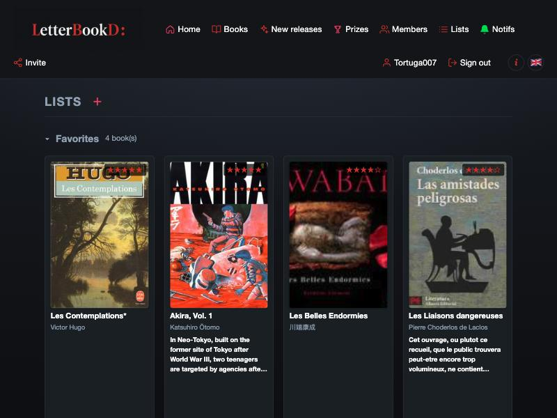

Lists
Why it exists: Organise your reads: favorites, to-read list, books you have finished, plus any themed lists you want to create (genres, themes, reading challenges).

Walkthrough
Three system lists are always present: 'Favorites' (heart), 'To read' (queue), and 'All my books' (everything you have saved). Your personal lists follow them. Each list collapses and expands via its chevron, shows its book count, and displays its books as covers with star ratings overlaid.
A '+' button at the top creates a new list.
Action chains
Each row describes a trigger in the UI, the modal or form it opens, and the resulting effect.
| Trigger | Modal / Fields | Effect |
|---|---|---|
| '+' button next to 'Lists' | 'Title' field (120 characters max). | Creates a new empty list. It appears immediately in the left column, ready to be filled from book pages. |
| Chevron in front of a list | — | Opens or closes the accordion. Only one list can be open at a time (name='lists-acc'). |
| Trash icon next to a book (in a list) | Confirmation POST form. | Removes the book from the list. The book stays in the catalogue and in your other lists. |
| Trash icon on a personal list | Confirmation POST form. | Deletes the whole list. The books themselves are kept; only the list disappears. System lists cannot be deleted. |